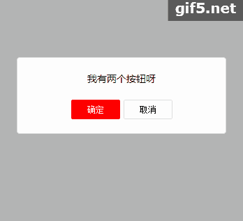

一张会动的图

使用说明：适用于各个弹框
1.引入dialog.css
2.引入jquery,dialog.min.js/dialog.js
3.通过dialog.xx()方法来调用
代码解析：
twoBtnDialog(content, width, btnSure, btnCancel)
譬如：dialog.twoBtnDialog('我可是有两个Btn',300, btnSure,btnCancel)
var btnSure = [{ value: '确定', callback: function() { } }]; var btnCancel = [{ value: '取消', callback: function() { }]
callback:function(){} 可以执行你想做的操作
代码解析：
oneBtnDialog(content, width, btnCancel, time)
譬如：dialog.oneBtnDialog('我有一个Btn',300, '取消')
后面的三个参数可以缺省，甚至你可以这样写dialog.oneBtnDialog('我有一个Btn');
代码解析：
noBtnDialog(content, width, time)
譬如：dialog.noBtnDialog('我是一闪而过的弹框',300, 1000)
后面两个参数可以缺省，你能这样写dialog.noBtnDialog('我是一闪而过的弹框')